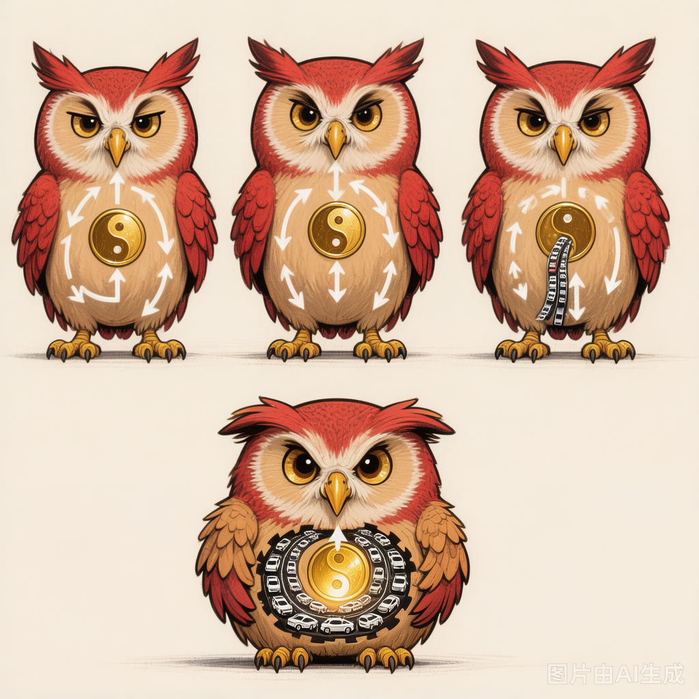

Why Your Body Is Like a Traffic Jam (And How to Unstick Yourself)
116| 117| 118|You know that feeling? You've had a decent night's sleep. You've eaten something resembling breakfast. Your to-do list is manageable. And yet — something just feels off.
119| 120|A vague heaviness in the chest. A sigh that escapes before you can catch it. A headache that sits behind your eyes like an unwelcome houseguest. The sense that your body is wearing clothes two sizes too small.
121| 122|You've probably been told it's stress. Cortisol. Burnout. The modern condition. Take a deep breath. Drink more water. Maybe try meditation.
123| 124|And look — those things help. But here's what I find interesting: 1,800 years ago, a Chinese physician named Zhang Zhongjing had a name for this exact pattern. He didn't have fMRI machines or cortisol assays. He had something arguably more useful: a framework for understanding why your body's internal traffic keeps grinding to a halt.
125| 126|In TCM, it's called Qi stagnation. And once you see it, you can't unsee it — because it shows up everywhere.
127| 128|The Traffic Jam Inside You
129| 130|Let me offer an analogy that clicked for me, and I think it'll click for you too.
131| 132|Your body has an energy system — let's call it Qi for now, though we'll get into what that word actually means in another post. This system is supposed to circulate freely through your body, like traffic moving smoothly on a well-designed highway network. Blood flows. Information travels. Organs communicate. Emotions process and release. Everything moves.
133| 134|Now imagine there's an accident on the highway.
135| 136|Maybe the accident was a difficult conversation you had this morning. Maybe it was the third deadline this week. Maybe it was something you can't even put your finger on — just a low-grade hum of unease that's been building for months.
137| 138|Doesn't matter what caused it. What matters is: the cars stop moving.
139| 140|Behind the accident site, traffic piles up. Five miles of backup. People are late. Tempers are short. The exits are clogged. And here's the thing about traffic jams — they create more problems. Someone gets road rage and causes another accident. A delivery truck stuck in the jam misses its window and spoils its cargo. The ripple effects spread outward from the original blockage.
141| 142|This, roughly speaking, is Qi stagnation. Something disrupted the flow. The disruption created a backup. The backup created secondary problems. And your body — which is exquisitely good at adapting in the short term and terrible at hiding the long-term cost — started sending you signals.
143| 144|The body speaks first in whispers. Then in shouts. Qi stagnation is the whisper stage — if you listen.145| 146|
What Stagnation Feels Like (A Checklist, Not a Diagnosis)
147| 148|I'm not going to give you a symptom checklist and say "if you check three boxes, you have Qi stagnation." That's not how this works. But I can share what the classical texts describe, because reading them for the first time, I kept thinking: this sounds like… everyone I know.
149| 150|Here are the patterns Zhang Zhongjing and his successors observed, translated from clinical descriptions that are nearly two millennia old:
151| 152|The Physical Signals
153|-
154|
- A sensation of constriction or fullness in the chest — like you can't quite take a full breath, or like something is sitting on your sternum 155|
- Frequent, involuntary sighing — your body trying to release pressure, one exhale at a time 156|
- Hypochondriac discomfort — tenderness or dull ache along the lower rib cage (where the Liver channel runs, though that's a topic for another day) 157|
- Irregular digestion — alternating between bloating, appetite loss, and random hunger; bowel movements that don't follow a pattern 158|
- Tension headaches — often on the sides or top of the head, the kind that make you want to rub your temples for hours 159|
- A lump-in-the-throat sensation (called plum-pit qi in the classics) — you can swallow fine, but something feels there, especially when emotions run high 160|
The Emotional Signals
163|-
164|
- Irritability — small things bother you more than they should 165|
- Mood swings — up and down without a clear trigger, or cycling between feeling okay and feeling inexplicably low 166|
- A feeling of being "stuck" — not depression exactly, but a sense that life isn't moving forward despite your efforts 167|
- Sensitivity to frustration — when things go wrong (and they always do), your reaction feels disproportionate, like someone turned up the volume on your emotional response 168|
Sound familiar? If you're nodding, you're not alone. In the classical framework, these aren't separate issues. They're all expressions of the same underlying pattern: flow interrupted.
171| 172|
174|Ollie directs traffic — because somebody's Qi is definitely not moving.
175|But What Caused the Accident?
178| 179|This is where TCM gets genuinely interesting, because it doesn't just describe the traffic jam — it asks what caused the crash. And the answer is rarely one thing.
180| 181|The most common culprit, according to both ancient texts and modern clinic observations? Emotions that didn't get processed.
182| 183|Now, I know "process your emotions" sounds like the kind of thing a wellness influencer says while selling jade eggs. So let me be specific about what TCM actually means by this, because it's different from what you might think.
184| 185|In Chinese medicine, each emotion has an organic association. This doesn't mean "anger lives in your liver" in a literal anatomical sense. It means that certain emotional states tend to affect certain functional systems more than others. The most relevant pairing here is:
186| 187|-
188|
- Anger, frustration, repressed irritation → affects the Liver system (Gan) → which governs the smooth flow of Qi throughout the body 189|
When you feel frustrated and don't express it — whether because it's not socially appropriate, because you've trained yourself to suppress it, or because you don't even realize you're holding it — the Liver's job of keeping things moving gets compromised. The flow slows. The backup begins.
192| 193|I'm not saying "just yell at people." That would be terrible advice, and also my neighbors would complain. What I'm saying is: unprocessed emotional energy has to go somewhere, and if it doesn't go out, it goes in.
194| 195|Other common stagnation triggers include:
196|-
197|
- Prolonged sitting — your literal body stops moving, and somehow your metaphorical energy follows suit (there's a reason desk workers report high rates of stagnation-type symptoms) 198|
- Dietary patterns — excessive greasy or rich foods, eating under stress, or irregular meal times can gum up the works (more on the Spleen-Stomach dynamic later) 199|
- Lack of movement — exercise moves Qi. Period. The ancients knew this without ever seeing a treadmill. 200|
- Seasonal factors — Spring is particularly associated with the Liver and with the potential for stagnation to worsen or improve depending on how you work with it 201|
So What Do You Actually Do About It?
204| 205|I'm going to give you something practical. Not medical advice — if something hurts or worries you, please see a real clinician. But a framework you can start applying today, drawn from the same tradition that described this pattern 18 centuries ago.
206| 207|1. Move Your Body (Yes, Really)
208|This is boring advice. It's also the single most consistently effective intervention for mild-to-moderate Qi stagnation across two thousand years of observation. You don't need a gym membership. You need to walk outside, swing your arms, twist your torso, breathe deeply enough that your ribs actually move.
209|The Chinese have a saying: "Flowing water does not stagnate." Be the water.
210| 211|2. Let the Sighs Out
212|Remember those involuntary sighs? Your body is already trying to fix itself. Stop suppressing them. When you feel the urge to sigh, sigh. Extend the exhale. Make it audible. This isn't drama — it's physiology. A long, slow exhale activates your parasympathetic nervous system and mechanically helps release the intercostal muscles around your ribs where so much stagnation concentrates.
213| 214|3. Check Your Shoulders
215|Right now, as you read this: are your shoulders somewhere near your ears? Relax them. Drop them. Unclench your jaw while you're at it. We hold enormous amounts of stagnant tension in the upper body, especially the neck, shoulders, and jaw — areas governed in TCM by the Gallbladder channel (the Liver's partner). Physical unknotting here can produce surprisingly emotional releases.
216| 217|4. Eat Warm, Cooked Foods
218|If your digestion is part of the stagnation picture (bloating, irregular appetite), cold/raw foods can make it worse. This doesn't mean never eat salad again. It means: when you're already stuck, give your digestive fire ingredients it can actually work with. Soups, stews, warm cooked vegetables, teas. Think of it as reducing friction on the highway.
219| 220|3. Find Your Outlet
221|For some people it's journaling. For others it's talking to a friend. For others it's intense exercise, creative work, music, or simply sitting quietly until the emotion names itself. The specific outlet matters less than having one. Stagnation feeds on suppression. Whatever gets the energy moving outward instead of spiraling inward is, in this framework, therapeutic.
222| 223|When to Seek Help
224| 225|Lifestyle adjustments help with garden-variety stagnation. But some situations warrant professional attention:
226|-
227|
- Pain that doesn't improve with rest and gentle movement 228|
- Digestive symptoms that are worsening or interfering with daily life 229|
- Emotional states that feel unmanageable or hopeless 230|
- Any symptom that scares you 231|
There is no shame in this. The Shanghan Lun itself is organized around recognizing when a pattern has progressed beyond self-care and needs active treatment. Knowing the difference is wisdom, not weakness.
233| 234| — Ollie, who once sat at a desk for six straight hours and felt his own liver file a formal complaint. 235| 236|Sources & Further Reading
238|-
239|
- 240| Zhang Zhongjing (张仲景). Shanghan Lun (《伤寒论》, Treatise on Cold Damage Disorders), circa 200–210 CE. Specifically, the chapters on Shaoyang pattern differentiation, which detail the clinical presentations of Qi stagnation involving the Liver and Gallbladder channels. 241| 242|
- 243| Huangdi Neijing (《黄帝内经》, Su Wen chapter 24: "On Raising the Clear and Lowering the Turbid"). Discusses the relationship between emotional states and organ function, including the foundational concept that excessive anger damages the free-flowing function of the Liver. 244| 245|
- 246| Maciocia, Giovanni. The Foundations of Chinese Medicine. Elsevier, 3rd edition, 2015. Chapters on the Liver system and Qi stagnation provide a comprehensive modern clinical overview accessible to non-practitioners. 247| 248|
- 249| Kaptchuk, Ted. The Web That Has No Weaver. Contemporary Books, 1983. Still one of the best introductions to TCM theory for general readers, with an accessible explanation of Qi and the channel system. 250| 251|